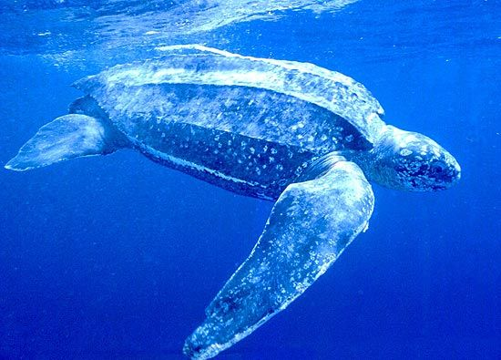

A tartaruga-de-couro (Dermochelys coriacea), tartaruga-gigante, tartaruga-de-cerro ou tartaruga-de-quilha é a maior das espécies de tartarugas e é muito diferente das outras tanto em aparência quanto em fisiologia. É a única espécie extante do gênero Dermochelys e da família Dermochelyidae.

Curiosidade
A área conhecida com desovas regulares situa-se no Litoral norte do Espírito Santo, próximo à foz do Rio Doce.
O traço mais notável é a ausência visível de carapaça com escamas queratinizadas, encontradas no casco da maioria das outras tartarugas. As tartarugas de couro são os únicos répteis cujas escamas não possuem β-queratina. Ao invés disso, a estrutura óssea da carapaça é reduzida a pequenos ossículos na forma de estrelas intercaladas, inseridas em tecido conjuntivo espesso e cartilagem. Os maiores desses ossículos são tuberculados e dispostos em linhas. Essas linhas, visíveis sob a pele, formam cristas onduladas chamadas quilhas que vão da cabeça até a cauda do animal, dando-lhe uma aparência aerodinâmica, lembrando as quilhas do casco de um barco. A parte de trás do animal tem sete quilhas: a do meio é a "quilha vertebral", as outras seis são as "quilhas laterais". Na barriga, o plastrão tem apenas três quilhas pouco marcadas.
A tartaruga-de-couro exibe várias características anatômicas que se acredita estarem associadas a uma vida em águas frias, incluindo uma extensa cobertura de tecido adiposo marrom, músculos nas nadadeiras com maior tolerância a baixas temperaturas, trocadores de calor em contracorrente entre as grandes nadadeiras dianteiras e o centro do corpo, e uma extensa rede de trocadores de calor em contracorrente em torno da traqueia.